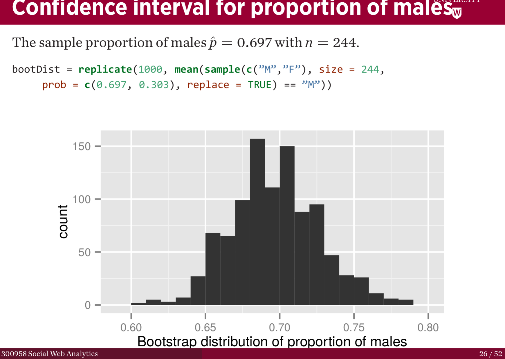

SWA-Project
Table of Contents
- 1. TODO Add Members as Collaborators
- 2. DONE Documentation
- 3. DONE Make a Discord Server
- 4. DONE Share links on Vuws
- 5. Correspondence
- 6. TODO Working
- 6.1. DONE 8.1 Analysing friend and follower count
- 6.1.1. DONE 1 Pull Tweets ryan
- 6.1.2. DONE 2 Extract the Friend and Follower Count ryan
- 6.1.3. DONE 3 Find the Average Followers ryan
- 6.1.4. DONE 4 Find the proprtion above average
- 6.1.5. DONE 5 Bootstrap a confidence interval ryan ATTACH
- 6.1.6. DONE 6 Who has a higher friend count given the confidence Interval ryan
- 6.1.7. DONE 7 Test for Independence ryan
- 6.2. TODO 8.2 Finding Themes
- 6.2.1. 8 Find unique users with above average friend counts ryan
- 6.2.2. TODO 9 Find Unique users who have \(\leq\) average friend counts ryan
- 6.2.3. TODO 10 Combine tweets of users identified in 8/9 ryan
- 6.2.4. TODO 11 Clean and pre-process the tweet text data
- 6.2.5. TODO 12 Display the first two tweets
- 6.2.6. TODO Create a TDM, use TFIDF, how many tweets were empty? ryan
- 6.2.7. TODO 14 Cluster the Results with respect to cosine distance ryan
- 6.3. TODO 8.3 Building Networks Hassan Navid
- 6.1. DONE 8.1 Analysing friend and follower count
<p> <img src=“https://img.shields.io/badge/Chat-5%20Members-green” /> <img src=“https://img.shields.io/badge/Contributors-5%20Member-green” /> <img src=“https://img.shields.io/badge/Questions-7%20Completed-orange” /> </p>
Github for Social Web Analytics
- Home Page
- Docs / Gitpage
- Wiki
- Discord
- This expires every 24 hrs
2020-04-25 Sat 08:56
- Project Specification
- HTML Export (of this readme)
- Current Report
1 TODO Add Members as Collaborators
[X]Ryan[X]Kieran[ ]Navid[ ]Hassan[ ]Ben
2 DONE Documentation
2.1 DONE Make a Wiki
- Probably MediaWiki because github wiki doesn’t deal with LaTeX
- Wiki.JS is another option
2.1.1 DONE Configure Usernames for Apache2 Server
I’m going to have to adjust the /etc/apache2/sites-enabled/000-default.conf in
order to have the mediawiki publically accessible.
- put config under version control
I will also need to put the Apache Config under version control using
stow.
2.2 DONE Make a Gitpage
- The gitpage will be almost the same as the wiki, but, if there are any issues
configuring
mkdocsand usingmkdocs gh-deploythen just: - add information to the Wiki
- Update the docs on GitHub
- File an issue on GitHub so somebody else can build the docs
3 DONE Make a Discord Server
3.1 DONE Make a WebHook for Github Issues
Follow These Instructions here
It seems like it is necessary to append /github at the end of the Payload
URL as documented here.
That link also suggested that the Content type should be application/json.
3.2 DONE Invite all Members
4 DONE Share links on Vuws
Put the following links up on Vuws:
[X]Discord Server[X]Github[X]GitPage[X]Wiki
5 Correspondence
5.1 Group Email
Hey guys,
- I’ve made a GitHub repo here
- A corresponding GitPage here
- It’s being deployed from the
gh-pagesbranch, built usingmkdocsas
- It’s being deployed from the
described on the page
- I also just put up a wiki on an Apache Server here that can be used in
conjuction with the gh-pages branch.
- Github doesn’t support MathJax so unfourtunately the built in wiki isn’t an option
- Also I’m on cable so I can’t get a static IP, hence if I have a power outage be
mindful that the link will change and I’ll have to post up my new IP.
- Finally I’ve made a discord server which you can access through this invitation
- I used a webhook so that GitHub will post to that chat every time a push is
made or an issue posted.
- Remember you can commit without pushing so this shouldn’t be too annoying.
- I used a webhook so that GitHub will post to that chat every time a push is
made or an issue posted.
I’ll add everybody as Collaborators tomorrow, but GitHub just went down for maintenance so I’ll have to do it later
Also there is a post on the discussion board dated 2019-09-17, just disregard
that. I’ll download the tweets tomorrow and push them to GitHub so we can all
get started, I haven’t decided on the company to use but it doesn’t really matter.
6 TODO Working
6.1 DONE 8.1 Analysing friend and follower count
I like this post on managing the work so let’s use that.
6.1.1 DONE 1 Pull Tweets ryan
This was easy, I chose SquareEnix because I’m looking forward to FFVII when
we finish this project :beers:
Nope, it was all japanese, but Ubisoft is uniqe word that will be really easy to search for (Bunnings would be good to, Valve would be awful) I’ve just stored my tokens here for reference as well.
- Tokens
–—BEGIN PGP MESSAGE–—
jA0ECQMClqDOdZ22OWj/0ukBP+GobsGEIuYwIjk7+9c6MSFzpNx2beXfBWPtvN4s 1XFim8Mvi2imEeQznCDCo5hLKe4FouPMHsU2Y+Rp0q54NHCbWR8iYalqohmc52rY VPnzSVcFtH5y7juOcFirOmZ5BPGizEFx/OIQNECmsyA5P3e5cGt7+kezvunSGKL1 CuwgstsiSZCIjysou1cSoP0/Fx308gox287ZvYlHHA9L+54RlypCNDRtYMRc1ln6 Xh0CGbW01vt1LmA++n8l/zafqeu5iHCRWSEmlrJdXf0Dj2iCbTvtt0gWCO9eAOyu N248+q7pRMDl0DOx9xOZL+ZaeS5hBSaKpyL3E8abtqZ8D/IcI6cUpRhVp3Qo4p49 dxli/Je1ulhXPYLeg1S8rKC9mm6QyU8dtwMl5LhL0s5gHqWemwdmsqojGFCZhj5t rm2ZnD9uwrYSrDXE5BztvYayvRO6JU96LphDdnNXV2vJjLVh0+uUqAJWXm0poi6i msB92v8Y+zEktXHtEWUYtrzHw/8Jg5Ddjv4YeRyPbCQb5YGZmd7tdmDbqYUCH0WI V7RtOHEo7rF/cPlf6QZzoLBmpsR4CCQPOhl0rWG7sK3QjHT7g2iYxv9fj+0pB6+E a73kebYTxh3D0S/g6nvZ08iBdTo+a7kMn1g6kd29AkpDD+PB+4Vu9NJESzCrcaDZ WwEP =8/Cr –—END PGP MESSAGE–—
6.1.2 DONE 2 Extract the Friend and Follower Count ryan
Just use the duplicated function as an index as shown here
6.1.3 DONE 3 Find the Average Followers ryan
Just used the mean function as shown here
6.1.4 DONE 4 Find the proprtion above average
Use mean(vec<val)
6.1.5 DONE 5 Bootstrap a confidence interval ryan ATTACH
This method was provided in the lecture notes, I also did some extra research for better marks:

Figure 1: Lossless Compression of a Network graph
6.1.6 DONE 6 Who has a higher friend count given the confidence Interval ryan
6.1.7 DONE 7 Test for Independence ryan
Originally I tried the following as described in issue #3
tens <- y[0 <= y & y < 100] hundreds <- y[100 <= y & y < 1000] oneK <- y[1000 <= y & y < 1000] twoK <- y[2000 <= y & y < 1000] threeK <- y[3000 <= y & y < 1000] fourK <- y[4000 <= y & y < 1000] fiveKp <- y[5000 <= y & y < Inf]
but I didn’t like that and changed it to this:
## Assign Categories y_df <- data.frame(y) y_df$cat[0 <= y_df$y & y_df$y < 100] <- "Tens" y_df$cat[100 <= y_df$y & y_df$y < 1000] <- "Hundreds" y_df$cat[1000 <= y_df$y & y_df$y < 2000] <- "1Thousands" y_df$cat[2000 <= y_df$y & y_df$y < 3000] <- "2Thousands" y_df$cat[3000 <= y_df$y & y_df$y < 4000] <- "3Thousands" y_df$cat[4000 <= y_df$y & y_df$y < 5000] <- "4Thousands" y_df$cat[5000 <= y_df$y & y_df$y < Inf] <- "5ThousandOrMore" ### Make a factor y_df$cat <- factor(y_df$cat, ordered = FALSE) ### Determine Frequencies y_freq <- table(y_df$cat) %>% as.matrix()
- DONE Use Bootstrap Method
Alright I fiagured this out, you simply can’t use a multinomial distribution I don’t think, or if you can it should be the observed proportions not the expected, because, the proportions will be independent by the nature that they are simply random.
hence you’re seeing how many times you see a false positive for independent data by mere chance.